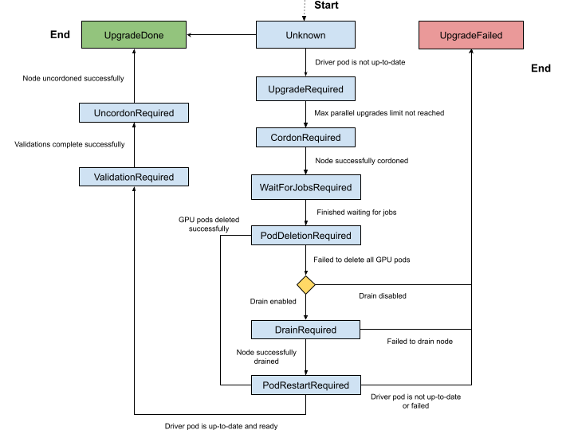

GPU Driver Upgrades#
About Upgrading the GPU Driver#
The NVIDIA driver daemon set requires special consideration for upgrades because the driver kernel modules must be unloaded and loaded again on each driver container restart. Consequently, the following steps must occur across a driver upgrade:
Disable all clients to the GPU driver.
Unload the current GPU driver kernel modules.
Start the updated GPU driver pod.
Install the updated GPU driver and load the updated kernel modules.
Enable the clients of the GPU driver.
The GPU Operator supports several methods for managing and automating this driver upgrade process.
Note
The GPU Operator only manages the lifecycle of containerized drivers. Drivers which are pre-installed on the host are not managed by the GPU Operator.
Upgrades with the Upgrade Controller#
NVIDIA recommends upgrading by using the upgrade controller and the controller is enabled by default in the GPU Operator. The controller automates the upgrade process and generates metrics and events so that you can monitor the upgrade process. It supports both cluster policy driver management and NVIDIA driver custom resource management. The upgrade controller does not require a cluster policy custom resource when NVIDIA driver custom resources manage the driver.
Quick Reference#
Driver management method |
Resource to update |
Driver version field |
Upgrade policy field |
|---|---|---|---|
NVIDIA driver custom resource |
|
|
|
Cluster policy custom resource |
|
|
|
Procedure#
Select the driver management method that you use.
Upgrade the driver by changing
spec.versionin the NVIDIA driver custom resource that manages the target nodes:$ kubectl patch nvidiadrivers.nvidia.com/<resource-name> \ --type='json' \ -p='[{"op": "replace", "path": "/spec/version", "value":"580.95.05"}]'
Optional: For each node, monitor the upgrade status:
$ kubectl get node -l nvidia.com/gpu.present \ -ojsonpath='{range .items[*]}{.metadata.name}{"\t"}{.metadata.labels.nvidia\.com/gpu-driver-upgrade-state}{"\n"}{end}'
Example Output
k8s-node-1 upgrade-required k8s-node-2 upgrade-required k8s-node-3 upgrade-required
You can periodically poll the upgrade status by running the preceding command. The GPU driver upgrade is complete when the output shows
upgrade-done:k8s-node-1 upgrade-done k8s-node-2 upgrade-done k8s-node-3 upgrade-done
Upgrade the driver by changing
spec.driver.versionin the cluster policy custom resource:$ kubectl patch clusterpolicies.nvidia.com/cluster-policy \ --type='json' \ -p='[{"op": "replace", "path": "/spec/driver/version", "value":"580.95.05"}]'
If you are using OpenShift, you must update the
spec.driver.version,spec.driver.repository, andspec.driver.imagevalues:$ kubectl patch clusterpolicies.nvidia.com/cluster-policy \ --type='json' \ -p='[{"op": "replace", "path": "/spec/driver/version", "value":"580.95.05"},{"op": "replace", "path": "/spec/driver/repository", "value":"nvcr.io/nvidia"},{"op": "replace", "path": "/spec/driver/image", "value":"driver"}]'
Optional: For each node, monitor the upgrade status:
$ kubectl get node -l nvidia.com/gpu.present \ -ojsonpath='{range .items[*]}{.metadata.name}{"\t"}{.metadata.labels.nvidia\.com/gpu-driver-upgrade-state}{"\n"}{end}'
Example Output
k8s-node-1 upgrade-required k8s-node-2 upgrade-required k8s-node-3 upgrade-required
You can periodically poll the upgrade status by running the preceding command. The GPU driver upgrade is complete when the output shows
upgrade-done:k8s-node-1 upgrade-done k8s-node-2 upgrade-done k8s-node-3 upgrade-done
Configuration Options#
Configure spec.upgradePolicy on each NVIDIA driver custom resource.
The policy applies only to nodes owned by that resource, so different node pools can use
different parallelism, availability, workload eviction, and drain settings:
apiVersion: nvidia.com/v1alpha1
kind: NVIDIADriver
metadata:
name: example
spec:
version: 580.95.05
nodeSelector:
driver.config: example
upgradePolicy:
autoUpgrade: true
maxParallelUpgrades: 1
maxUnavailable: 25%
waitForCompletion:
timeoutSeconds: 0
podSelector: ""
podDeletion:
force: false
timeoutSeconds: 300
deleteEmptyDir: false
drain:
enable: false
force: false
podSelector: ""
timeoutSeconds: 300
deleteEmptyDir: false
If spec.upgradePolicy is omitted, the Operator enables automatic upgrades with
maxParallelUpgrades: 1, maxUnavailable: 25%, and the defaults shown in the preceding
example.
The maxParallelUpgrades and maxUnavailable limits are evaluated separately for the
nodes owned by each resource.
Configure spec.driver.upgradePolicy in the cluster policy custom resource.
One policy applies to all driver nodes:
spec:
driver:
upgradePolicy:
autoUpgrade: true
maxParallelUpgrades: 1
maxUnavailable: 25%
waitForCompletion:
timeoutSeconds: 0
podSelector: ""
gpuPodDeletion:
force: false
timeoutSeconds: 300
deleteEmptyDir: false
drain:
enable: false
force: false
podSelector: ""
timeoutSeconds: 300
deleteEmptyDir: false
The policy fields have the following effects:
autoUpgradeEnables or disables the upgrade controller for the applicable nodes. When set to
false, the other policy fields are ignored.maxParallelUpgradesSets the number of nodes that can be upgraded in parallel. A value of
0means that there is no limit.maxUnavailableSets the maximum number or percentage of applicable nodes that can be unavailable during an upgrade.
waitForCompletionSelects pods or jobs that must finish before the driver is upgraded on a node and sets how long to wait. A
timeoutSecondsvalue of0waits indefinitely.gpuPodDeletionorpodDeletionControls eviction of pods that have allocated GPUs.
gpuPodDeletionis the field name in the cluster policy andpodDeletionis the field name in an NVIDIA driver custom resource.drainConfigures node drain as a fallback when GPU pod deletion cannot remove the GPU workloads. By default, drain is disabled.
Warning
spec.driver.upgradePolicy.drain.enable in the cluster policy applies to all nodes managed by
that driver configuration.
spec.upgradePolicy.drain.enable in an NVIDIA driver custom resource applies to the nodes owned
by that resource.
When set to true, the upgrade controller can drain each applicable node before upgrading the driver on that node.
Draining a node evicts all pods from that node, including workloads unrelated to the GPU driver.
This is a disruptive operation that interrupts running GPU and non-GPU workloads on every node the policy processes.
Enable drain only when gpuPodDeletion in the cluster policy, or podDeletion in an
NVIDIA driver custom resource, is insufficient to remove all GPU-using pods on its own.
Adjust the pod deletion settings first and use drain only if those settings do not work.
If you must enable drain, use podSelector to limit which pods are evicted.
If you specify a value for maxUnavailable and also specify maxParallelUpgrades,
the maxUnavailable value applies an additional constraint on the value of
maxParallelUpgrades to ensure that the number of parallel upgrades does not
cause more than the intended number of nodes to become unavailable during the upgrade.
For example, if you specify maxUnavailable=100% and maxParallelUpgrades=1,
one node is upgraded at a time.
The maxUnavailable value also applies to currently unavailable nodes in the applicable node set.
If the number of cordoned nodes already meets the maxUnavailable value,
then the upgrade does not progress.
Upgrade State Machine#
The upgrade controller manages driver upgrades through a well-defined state machine.
The node label, nvidia.com/gpu-driver-upgrade-state, indicates the state a node is currently in.
The set of possible states are:
Unknown (empty): The upgrade controller is disabled or the node has not been processed yet.
upgrade-required: NVIDIA driver pod is not up-to-date and requires an upgrade. No actions are performed at this stage.cordon-required: Node will be marked Unschedulable in preparation for the driver upgrade.wait-for-jobs-required: Node will wait on the completion of a group of pods/jobs before proceeding.pod-deletion-required: Pods allocated with GPUs are deleted from the node. If pod deletion fails, the node state is set todrain-requiredif drain is enabled in the applicable upgrade policy.drain-required: Node is drained usingkubectl drain, which evicts all pods on the node. This state is only reached if pod deletion fails to remove all GPU-using pods anddrain.enableis set totruein the applicable upgrade policy. This state is skipped if all GPU pods are successfully deleted from the node.pod-restart-required: The NVIDIA driver pod running on the node will be restarted and upgraded to the new version.validation-required: Validation of the new driver deployed on the node is required before proceeding. The GPU Operator performs validations in the pod namedoperator-validator.uncordon-required: Node will be marked Schedulable to complete the upgrade process.upgrade-done: NVIDIA driver pod is up-to-date and running on the node.upgrade-failed: A failure occurred during the driver upgrade.
The complete state machine is depicted in the diagram below.
{kind=link}

Pausing Driver Upgrades#
With cluster policy driver management, set spec.driver.upgradePolicy.autoUpgrade to false
to pause automatic upgrades for all driver nodes.
With NVIDIA driver custom resource management, set spec.upgradePolicy.autoUpgrade to false
on a resource to pause automatic upgrades only for the nodes that it owns.
The Operator removes the upgrade-state labels from those nodes.
Set the field to true to re-enable automatic upgrades.
Skipping Driver Upgrades#
To skip driver upgrades on a certain node, label the node with nvidia.com/gpu-driver-upgrade.skip=true.
Metrics and Events#
The GPU Operator generates the following metrics during the upgrade process which can be scraped by Prometheus.
When NVIDIA driver custom resources manage the driver, the node upgrade metrics are aggregated across
all resources, and gpu_operator_auto_upgrade_enabled is 1 when at least one resource enables
automatic upgrades.
gpu_operator_auto_upgrade_enabled: 1 if driver auto upgrade is enabled; 0 if not.gpu_operator_nodes_upgrades_in_progress: Total number of nodes in which a driver pod is being upgraded on.gpu_operator_nodes_upgrades_done: Total number of nodes in which a driver pod has been successfully upgraded.gpu_operator_nodes_upgrades_failed: Total number of nodes in which a driver pod upgrade has failed.gpu_operator_nodes_upgrades_available: Total number of nodes in which a driver pod upgrade can start on.gpu_operator_nodes_upgrades_pending: Total number of nodes in which driver pod upgrades are pending.
The GPU Operator generates events during the upgrade process. The most common events are for state transitions or failures at a particular state. Below are an example set of events generated for the upgrade of one node.
$ kubectl get events -n default --sort-by='.lastTimestamp' | grep GPUDriverUpgrade
Example Output
10m Normal GPUDriverUpgrade node/localhost.localdomain Successfully updated node state label to [upgrade-required]
10m Normal GPUDriverUpgrade node/localhost.localdomain Successfully updated node state label to [cordon-required]
10m Normal GPUDriverUpgrade node/localhost.localdomain Successfully updated node state label to [wait-for-jobs-required]
10m Normal GPUDriverUpgrade node/localhost.localdomain Successfully updated node state label to [pod-deletion-required]
10m Normal GPUDriverUpgrade node/localhost.localdomain Successfully updated node state label to [pod-restart-required]
7m Normal GPUDriverUpgrade node/localhost.localdomain Successfully updated node state label to [validation-required]
6m Normal GPUDriverUpgrade node/localhost.localdomain Successfully updated node state label to [uncordon-required]
6m Normal GPUDriverUpgrade node/localhost.localdomain Successfully updated node state label to [upgrade-done]
Troubleshooting#
If the upgrade fails for a particular node, the node is labelled with the upgrade-failed state.
View the upgrade state labels:
$ kubectl get node -l nvidia.com/gpu.present \ -ojsonpath='{range .items[*]}{.metadata.name}{"\t"}{.metadata.labels.nvidia\.com/gpu-driver-upgrade-state}{"\n"}{end}'
Example Output
k8s-node-1 upgrade-done k8s-node-2 upgrade-done k8s-node-3 upgrade-failed
Check the events to determine the stage that the upgrade failed:
$ kubectl get events -n default --sort-by='.lastTimestamp' | grep GPUDriverUpgrade
(Optional) Check the logs from the upgrade controller in the gpu-operator container:
$ kubectl logs -n gpu-operator gpu-operator-xxxxx | grep controllers.Upgrade
After resolving the upgrade failures for a particular node, you can restart the upgrade process on the node by placing it in the
upgrade-requiredstate:$ kubectl label node <node-name> nvidia.com/gpu-driver-upgrade-state=upgrade-required --overwrite
Upgrades without the Upgrade Controller#
If the upgrade controller is disabled or not supported for your GPU Operator version, a component called k8s-driver-manager is responsible
for executing the driver upgrade process.
The k8s-driver-manager is an initContainer within the driver Daemonset, which ensures all existing GPU driver clients are disabled before
unloading the current driver modules and continuing with the new driver installation.
This method still automates the core driver upgrade process, but lacks the observability that the upgrade controller provides as well as additional
controls such as pausing/skipping upgrades.
In addition, no new features will be added to the k8s-driver-manager moving forward in favor of the upgrade controller.
Procedure#
Upgrade the driver by changing
spec.versionin the NVIDIA driver custom resource that manages the target nodes:$ kubectl patch nvidiadrivers.nvidia.com/<resource-name> \ --type='json' \ -p='[{"op": "replace", "path": "/spec/version", "value":"580.95.05"}]'
Optional: Monitor the upgrade by watching the deployment of the new driver pods on GPU worker nodes:
$ kubectl get pods -n gpu-operator \ -l app.kubernetes.io/component=nvidia-driver -w
Upgrade the driver by changing the driver version, repository, and image in the cluster policy custom resource:
$ kubectl patch clusterpolicies.nvidia.com/cluster-policy \ --type='json' \ -p='[{"op": "replace", "path": "/spec/driver/version", "value":"580.95.05"},{"op": "replace", "path": "/spec/driver/repository", "value":"nvcr.io/nvidia"},{"op": "replace", "path": "/spec/driver/image", "value":"driver"}]'
Optional: Monitor the upgrade by watching the deployment of the new driver pods on GPU worker nodes:
$ kubectl get pods -n gpu-operator -lapp=nvidia-driver-daemonset -w
Configuration Options#
The following configuration options are available for k8s-driver-manager. The options allow users to control the
GPU pod eviction and node drain behavior.
Configure the options under spec.manager.env in each NVIDIA driver custom resource:
apiVersion: nvidia.com/v1alpha1
kind: NVIDIADriver
metadata:
name: example
spec:
manager:
env:
- name: ENABLE_GPU_POD_EVICTION
value: "true"
- name: ENABLE_AUTO_DRAIN
value: "true"
- name: DRAIN_USE_FORCE
value: "false"
- name: DRAIN_POD_SELECTOR_LABEL
value: ""
- name: DRAIN_TIMEOUT_SECONDS
value: "0s"
- name: DRAIN_DELETE_EMPTYDIR_DATA
value: "false"
Configure the options under spec.driver.manager.env in the cluster policy custom resource:
spec:
driver:
manager:
env:
- name: ENABLE_GPU_POD_EVICTION
value: "true"
- name: ENABLE_AUTO_DRAIN
value: "true"
- name: DRAIN_USE_FORCE
value: "false"
- name: DRAIN_POD_SELECTOR_LABEL
value: ""
- name: DRAIN_TIMEOUT_SECONDS
value: "0s"
- name: DRAIN_DELETE_EMPTYDIR_DATA
value: "false"
The
ENABLE_GPU_POD_EVICTIONenvironment variable enablesk8s-driver-managerto attempt evicting only GPU pods from the node before attempting a node drain. Only if this fails andENABLE_AUTO_DRAINis enabled will the node ever be drained.The
DRAIN_USE_FORCEenvironment variable must be enabled to evict GPU pods that are not managed by any of the replication controllers such as deployment, daemon set, stateful set, and replica set.The
DRAIN_DELETE_EMPTYDIR_DATAenvironment variable must be enabled to delete GPU pods that use theemptyDirtype volume.
Note
Since GPU pods get evicted whenever the NVIDIA Driver daemon set specification is updated, it might not always be desirable to allow this to happen automatically.
To prevent this daemonsets.updateStrategy parameter in the ClusterPolicy can be set to OnDelete .
With OnDelete update strategy, a new driver pod with the updated spec will only get deployed on a node once the old driver pod is manually deleted.
Thus, admins can control when to rollout spec updates to driver pods on any given node.
For more information on DaemonSet update strategies, refer to the Kubernetes documentation.